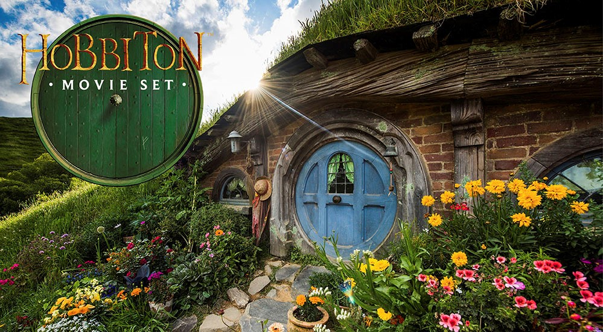

Home Shire Germany England Gallifrey
The Shire is a region of J. R. R. Tolkien's fictional Middle-earth, described in The Lord of the Rings and other works. The Shire refers to an area settled exclusively by Hobbits and largely removed from the goings-on in the rest of Middle-earth. It is located in the northwest of the continent, in the large region of Eriador and the Kingdom of Arnor. Its name in Westron was Sûza "Shire" or Sûzat "The Shire". Its name in Sindarin was 'i Drann.'
I am a huge LOTR fan, and I would love to travel to NZ to check out hobbiton. The movie set is an actual real place in New Zealand, and there are actual homes inside the hills! How cool would it be to see this?!
